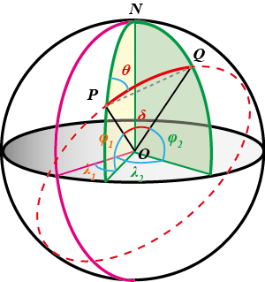

球面距离与方位角公式的推导：解三角形法¶
发布于：2017-03-08 | 分类：mathematics
根据地球上任意两地的经纬度，可以计算它们在球面上的最短距离（Great-circle Distance / Orthodromic Distance） 及相对始末位置的方位角（Bearing）。
本文基于地球是标准球体的假设，使用解三角形法（平面三角形和球面三角形）推导上述公式。
基本概念¶
-
纬度是地球上某点与球心的连线与地球赤道面所成的线面角（如图所示\varphi），北纬为正数，南纬为负数。 -
经度是地球上某点经线平面与本初子午面所成的二面角（如图所示的\lambda），东经为正数，西经为负数。 -
方位角是从某点的指北方向线起，依顺时针方向到目标方向线之间的水平夹角（如图所示\theta）。
球面上两点P、Q的最短距离为过P、Q的大圆对应两点之间的劣弧的长度（如图实线所示\overset{\frown}{PQ}）。将上述物理量等效到单位球中，如下图所示：

球面距离公式¶
\begin{align*} a &= \sin^2\frac{\Delta\varphi}{2} + \cos\varphi_1 \cos\varphi_2 \, sin^2\frac{\Delta\lambda}{2}\\ \delta &= 2\,atan2\frac{\sqrt{a}}{\sqrt{1-a}} \\ d &= R\,\delta\\ \tag{I} \end{align*}
其中，\varphi是纬度，\lambda是经度，R是地球平均半径（R=6371km）。\Delta\varphi=\varphi_2-\varphi_1，\Delta\lambda=\lambda_2-\lambda_1 分别为纬度、经度的差值。
注意：
- 代入计算的经、纬度为换算后的弧度值。
- 公式中反正切函数
atan2()区别于常规的atan()。
推导思路：求出\overset{\frown}{PQ}对应的球心角\delta，然后使用d = R\,\delta求出球面距离。
在球面三角形NPQ中直接使用球面三角形的余弦定理（Spherical law of cosines）3 4
\begin{equation*} \cos\delta = \sin\varphi_1 \sin\varphi_2 + \cos\varphi_1 \cos\varphi_2 \cos\Delta\lambda \tag{*}\label{eq:1} \end{equation*}
上式即可求出\overset{\frown}{PQ}对应的球心角，但是，当P、Q相邻很近（例如，数米之间）即\delta趋近于0时，\cos\delta将趋近于1（0.99999999）。 其后果是对于低浮点精度（low floating-point precision）的计算设备，可能由于舍入误差而造成错误的结果。当然，对于现代的64位浮点数运算 的计算机，一般不会出现上述问题。
为了使上述公式具有更好的计算兼容性，在\Delta{OPQ}中使用平面三角形余弦定理
\begin{align*} {PQ}^2 &= {OP}^2 + {OQ}^2 - 2\,{OP}\,{OQ}\,\cos\delta \\ &= 2 - 2\,( \sin\varphi_1 \sin\varphi_2 + \cos\varphi_1 \cos\varphi_2 \cos\Delta\lambda )\\ &= 2 - 2\,\left[ \sin\varphi_1 \sin\varphi_2 + \cos\varphi_1 \cos\varphi_2 \left( 1-2\,\sin^2\frac{\Delta\lambda}{2} \right) \right ]\\ &= 2 - 2(\sin\varphi_1 \sin\varphi_2 + \cos\varphi_1 \cos\varphi_2) + 4\,\cos\varphi_1 \cos\varphi_2\,\sin^2\frac{\Delta\lambda}{2} \\ &= 2\,\left( 1-\cos\Delta\varphi \right) + 4\,\cos\varphi_1 \cos\varphi_2 \,\sin^2\frac{\Delta\lambda}{2} \\ &= 4\,\sin^2\frac{\Delta\varphi}{2} + 4\,\cos\varphi_1 \cos\varphi_2 \,\sin^2\frac{\Delta\lambda}{2} \\ \end{align*}
令a=(PQ/2)^2，则上式写为：
进而得到球心角\delta为：
说明：
以上关于角度的推导基于单位球，即OP=OQ=1。
方位角公式¶
方位角\theta的计算公式：
推导思路：球面三角形的正弦定理和余弦定理。
在球面三角形NPQ中分别使用正弦定理和余弦定理：
\begin{align*} \frac{\sin\theta}{\cos\varphi_2} &= \frac{\sin\Delta\lambda}{\sin\delta} \\ \sin\varphi_2 &= \sin\varphi_1 \cos\delta + \cos\varphi_1 \sin\delta \, \cos\theta \tag{**}\label{eq:2} \end{align*}
得到：
\begin{align*} \sin\theta &= \frac{\cos\varphi_2}{\sin\delta} \, \sin\Delta\lambda\\ \cos\theta &= \frac{\sin\varphi_2-\sin\varphi_1 \cos\delta}{\cos\varphi_1 \sin\delta} \end{align*}
两式相除，并将式\eqref{eq:1}代入得：
\begin{align*} \tan\theta &= \frac{\sin\Delta\lambda \cos\varphi_1 \cos\varphi_2}{\sin\varphi_2-\sin\varphi_1 \cos\delta} \\ &= \frac{\sin\Delta\lambda \cos\varphi_1 \cos\varphi_2}{\sin\varphi_2-\left( \sin^2\varphi_1 \sin\varphi_2 + \sin\varphi_1 \cos\varphi_1 \cos\varphi_2 \cos\Delta\lambda \right)}\\ &= \frac{\sin\Delta\lambda \cos\varphi_2}{ \cos\varphi_1 \sin\varphi_2 - \sin\varphi_1 \cos\varphi_2 \cos\Delta\lambda} \end{align*}
取反函数即可得到方位角\theta的表达式。
已知起始点、方位角及距离，求目标位置¶
已知起始点经纬度P(\varphi_1,\lambda_1)，方向角\theta及球面距离d，计算目标位置Q(\varphi_2,\lambda_2)的公式为：
\begin{align*} \varphi_2 &= asin \left( \sin\varphi_1 \cos\delta + \cos\varphi_1 \sin\delta \cos\theta \right)\\ \lambda_2 &= \lambda_1 + atan2 \frac{\sin\theta \sin\delta \cos\varphi_1}{\cos\delta-\sin\varphi_1 \sin\varphi_2} \tag{III} \end{align*}
其中，球心角\delta = d/R。
推导思路：已知两边及夹角，解球面三角形问题。
根据球面三角形NPQ中的余弦定理，即式\eqref{eq:2}中的第二个式子，可直接得到Q点的纬度值\varphi_2。
根据球面三角形NPQ中的正弦定理，即式\eqref{eq:2}中的第一个式子，得到：
根据式\eqref{eq:1}可知：
以上二式相除：
从上式即可直接解出Q点的经度\lambda_2 = \lambda_1 + \Delta\lambda。